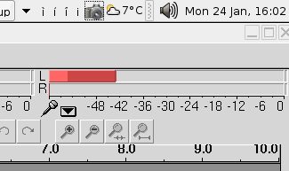
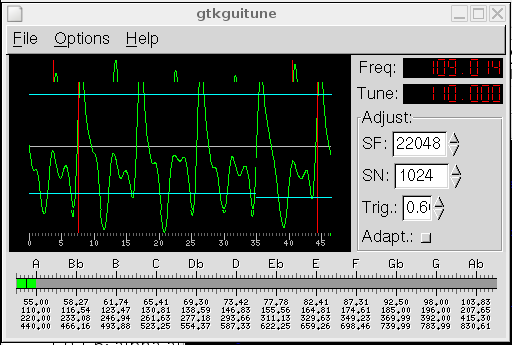

Songs in the Key of Tux: Recording with Audacity
I haven't been very good at keeping up this series, have I? Apologies to those of you who have been waiting for more in this series, and thank you to those who wrote asking for more.
So, what gives? Didn't I say in my last article that I was "chomping at the bit to start recording"? (Thanks to Michael Cox for pointing out that 'It's "champing," actually. As in "the horse was champing at the bit." Horses champ; they don't chomp.') Well... I have to admit that I got so bogged down in the whys and wherefores that I never got around to even trying to record. It was particularly disappointing for me to find myself unable to write a single word on the subject in time for December's issue, as Christmas Day marked the 10th anniversary of my learning to play guitar. Oh well.
Getting Started
OK, I'll come clean: most of this article will be about getting ready to record, rather than actually recording. As with my other articles, there will be a heavy emphasis on recording guitar, because I don't play any other instruments.
Every musician should record themselves playing, regularly. It doesn't matter if you have no intentions of allowing anyone else to hear the recordings, the act of recording in itself is helpful. Musicians and audience alike get caught up in the performance as well as the music, and many errors end up going unnoticed. A sound recording allows you to hear the shortcomings in your playing, and to hear what the audience hears: before I started this article, for example, I was unaware that when fingerpicking, the note I picked with my thumb was drowning out the rest of the sound.
The first thing to do in Audacity is to check your input. With some software out there, the only thing you can do is press 'record', hit the strings (or whatever is appropriate for your instrument), press 'play' and hope for the best. Audacity conveniently provides a way to keep your eye on your input levels at all times: there are two volume indicators, and we want the one that's furthest to the right (it conveniently has a microphone icon). Click on it, and you should see something like this:

That's the default for 'no input'. Hit the strings: if the levels jump, you're ready to record.
Tuning up
One of the best habits a guitarist can get into when recording is to tune the instrument before recording: not before a recording session, but before each press of the 'record' button. Even if you don't have perfect pitch, you will start to notice the difference in pitch after a few overdubs.
Enter gtkguitune! (Or similar). Digital tuners are a godsend for guitarists. Jack Endino (producer of Nirvana, Soundgarden, etc.) has a quite long article on the subject of tuning, but in short: tune the guitar in the way you expect to play it. I have met guitarists who have had 'opinions' about digital tuners, preferring to tune by holding the same note on the string below, or by using harmonics, but neither of these methods is reliable, and you should do these people a favor by beating them out of this opinion :).

See how the 'A' is tuned slightly flat in the picture? That's intentional.
Are we ready yet?
So... your guitar is in tune, Audacity is hearing the guitar, you're ready to record... and more than likely, it sounds bad.
First of all, PC sound equipment is terrible for recording. I had to set my input levels to 0.4 to avoid an unacceptable level of gain on the input. If at all possible, use an amplifier or pre-amplifier, no matter what the instrument. As it is, I just DId (direct injected: plugged the guitar straight into the mic socket).
Fortunately, Audacity comes with plugins to help compensate for things like this: the 'Amplify' plugin can add quite a lot of volume without adding gain; and the 'Compression' plugin can limit some of the gain.
There's no point in trying to explain sound: you have to hear for yourself. I came up with a simple riff this afternoon, and recorded it: "Things". The whole recording is downsampled to 8KHz, and set at the lowest bitrate oggenc could offer, but the recording is clear enough to make out what I was playing (complete with mistakes).
- things-raw.ogg: This is a sample from the original recording, without re-sampling, to use as the basis for comparison.
- things-amplify.ogg: This is the raw sample, with "Amplification (dB)" set to 6.5.
- things-compressed.ogg: This is things-amplify, run through the Compressor, with "Threshold" set to -29 dB, "Ratio" at 6.5:1, and "Attack Time" set to 0.2
I need to go back to the drawing board a little, because there is very little difference between the raw recording and the version that has been both amplified and compressed (though, honestly, that's to be expected). Next month, I'll continue the process, but using an amplifier. Until then, take care.
Jimmy has been using computers from the tender age of seven, when his father
inherited an Amstrad PCW8256. After a few brief flirtations with an Atari ST
and numerous versions of DOS and Windows, Jimmy was introduced to Linux in 1998
and hasn't looked back.
In his spare time, Jimmy likes to play guitar and read: not at the same time,
but the picks make handy bookmarks.
![[BIO]](../gx/2004/authors/oregan.jpg) Jimmy is a single father of one, who enjoys long walks... Oh, right.
Jimmy is a single father of one, who enjoys long walks... Oh, right.